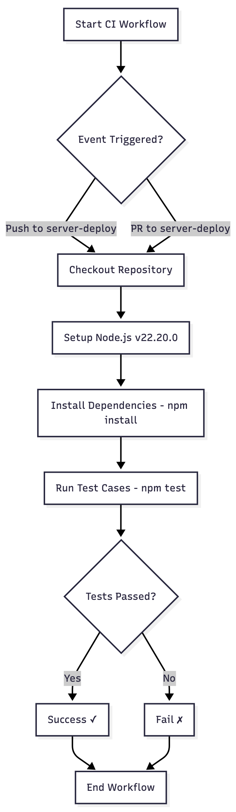
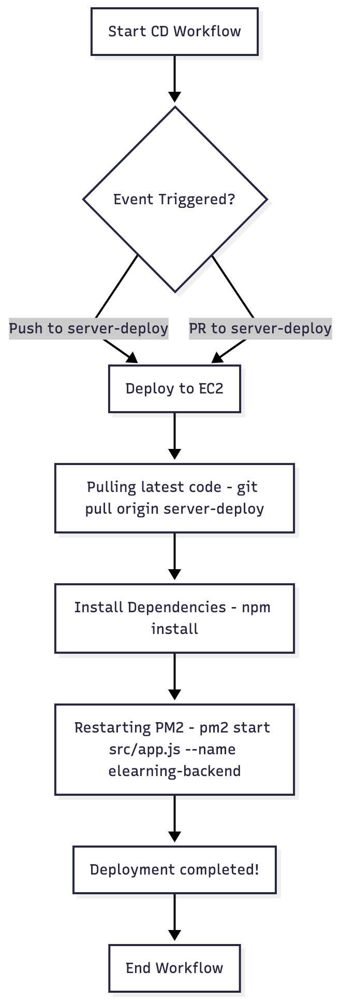

CI/CD
CI/CD
Frontend CI/CD (Vercel) (auto deploy)
Backend CI/CD (AWS EC2)
CI for Backend

Work Flow
Explanation of the CI Flow
1. Workflow Trigger
-
The pipeline runs when either:
-
You push code to server-deploy branch
-
OR a Pull Request is opened toward server-deploy
2. Checkout Repository
- GitHub Actions pulls your repository code into the CI environment so workflows can run on it.
3. Setup Node.js
- This step installs Node.js version 22.20.0 inside the GitHub Actions runner.
4. Install Dependencies
- Runs:
- npm install
- This installs all project dependencies required for building/testing.
5. Run Test Cases
Executes:
- npm test
6. Test Result Decision
If tests pass → workflow is marked SUCCESS
If tests fail → workflow stops and marks FAILURE
7. End Workflow
Pipeline ends after success or failure.
CD for Backend

Explanation of the Workflow
1. Start CD Workflow
- The deployment workflow begins.
2. Event Triggered?
-
The workflow checks if a specific event has happened.
-
The workflow is triggered when either:
-
Push to server-deploy branch
-
Pull Request (PR) to server-deploy branch
-
If yes → continue to deployment.
3. Deploy to EC2
- Once the event triggers, GitHub Actions logs into your EC2 using SSH and starts running deployment commands.
4. Pull Latest Code
Command:
-
git pull origin server-deploy
-
Your EC2 instance will:
-
Fetch the latest code from the server-deploy branch
-
Update the local project folder with new changes
5. Install Dependencies
Command:
- npm install
- All dependency is installed
6. Restart PM2
Command:
-
if server is not running
-
pm2 start src/app.js --name elearning-backend
OR
-
If the app is already running:
-
pm2 restart elearning-backend
This ensures:
-
Your latest code is now running
-
The backend server restarts without downtime
7. Deployment Completed
The workflow reports success.
8. End Workflow
The CD pipeline finishes.